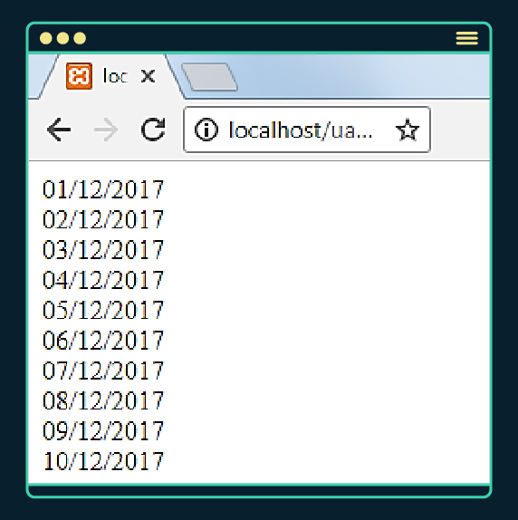

<pre>
	Realizar operações com datas é uma atividade comum na rotina de desenvolvedores de sistemas. Às vezes, são necessários procedimentos que envolvem cálculos entre datas, acréscimos de períodos e contagem de dias, entre outros.

Sabendo disso, você, desenvolvedor de sistemas, precisa implementar uma função em PHP que recebe duas datas como parâmetros: data inicial e data final. Você deve imprimir, nessa função, cada um dos dias entre essas duas datas, utilizando o formato d/m/Y do PHP.

Para escrever esse programa, você precisa utilizar a função add e as classes DateTime e DateInterval do PHP. O resultado, por exemplo, deve apresentar a sequência de datas na tela conforme pode ser observado na imagem a seguir:
</pre>
